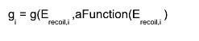
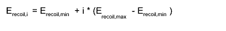
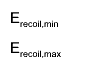
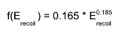
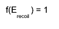

class KQContourPoint: public TObject
KQContourPoint.cxx KDataStructure Author: Daniel Wegner <mailto:Daniel.Wegner@student.kit.edu> on 4/28/11. * Copyright 2011 Karlsruhe Institute of Technology. All rights reserved. This class represents a single EDW event (Q, E_{Recoil}, sigma_ion, sigma_heat), whose confidence region for a specified confidence level can be drawn ( marker for central value, and contour line surrounding the confidence region
Function Members (Methods)
public:
| KQContourPoint(const KQContourPoint& anotherPoint) | |
| KQContourPoint(Double_t aQvalueOrEnergyIon = 0, Double_t anEnergyRecoilOrEnergyHeat = 0, const Char_t* aMode = "QErecoil", Double_t aSigmaIon = 0, Double_t aSigmaHeat = 0, Double_t aSigmaIonHeat = 0, Double_t aConfidenceLevel = 0.9, Double_t aVoltageBias = 8.0, Double_t anEpsilon = 3.0, Double_t aNumBinsX = 500, Double_t aNumBinsY = 500, Double_t aNumSigmas = 10) | |
| virtual | ~KQContourPoint() |
| void | TObject::AbstractMethod(const char* method) const |
| virtual void | TObject::AppendPad(Option_t* option = "") |
| virtual void | TObject::Browse(TBrowser* b) |
| void | CalculateContour() |
| static TClass* | Class() |
| virtual const char* | TObject::ClassName() const |
| virtual void | TObject::Clear(Option_t* = "") |
| virtual TObject* | TObject::Clone(const char* newname = "") const |
| virtual Int_t | TObject::Compare(const TObject* obj) const |
| virtual void | TObject::Copy(TObject& object) const |
| Bool_t | CutsALine(TF1* aFunction, Int_t aNumPoints = 1000) |
| Bool_t | CutsLindhardLine(Int_t aNumPoints = 1000) |
| Bool_t | CutsOne(Int_t aNumPoints = 1000) |
| virtual void | TObject::Delete(Option_t* option = "")MENU |
| virtual Int_t | TObject::DistancetoPrimitive(Int_t px, Int_t py) |
| virtual void | Draw(Option_t* anOption = "") |
| virtual void | TObject::DrawClass() constMENU |
| virtual TObject* | TObject::DrawClone(Option_t* option = "") constMENU |
| virtual void | TObject::Dump() constMENU |
| virtual void | TObject::Error(const char* method, const char* msgfmt) const |
| virtual void | TObject::Execute(const char* method, const char* params, Int_t* error = 0) |
| virtual void | TObject::Execute(TMethod* method, TObjArray* params, Int_t* error = 0) |
| virtual void | TObject::ExecuteEvent(Int_t event, Int_t px, Int_t py) |
| virtual void | TObject::Fatal(const char* method, const char* msgfmt) const |
| virtual TObject* | TObject::FindObject(const char* name) const |
| virtual TObject* | TObject::FindObject(const TObject* obj) const |
| Double_t | GetConfidenceFunctionValue() const |
| Double_t | GetConfidenceLevel() const |
| Double_t | GetConfidenceLevelError() const |
| TH2D* | GetContourHistogram() |
| virtual Option_t* | TObject::GetDrawOption() const |
| static Long_t | TObject::GetDtorOnly() |
| Double_t | GetEnergyHeat() const |
| Double_t | GetEnergyIon() const |
| Double_t | GetEnergyRecoil() const |
| Double_t | GetEpsilon() const |
| TF2* | GetFunction() const |
| TF2* | GetFunctionClone() const |
| TH2D* | GetHistogram() |
| virtual const char* | TObject::GetIconName() const |
| TMarker* | GetMarker() const |
| virtual const char* | TObject::GetName() const |
| Int_t | GetNpx() const |
| Int_t | GetNpy() const |
| Double_t | GetNumSigmas() const |
| virtual char* | TObject::GetObjectInfo(Int_t px, Int_t py) const |
| static Bool_t | TObject::GetObjectStat() |
| virtual Option_t* | TObject::GetOption() const |
| Double_t | GetQvalue() const |
| Int_t | GetResolutionX() const |
| Int_t | GetResolutionY() const |
| Double_t | GetSigmaEnergyHeat() const |
| Double_t | GetSigmaEnergyIon() const |
| Double_t | GetSigmaEnergyIonHeat() const |
| virtual const char* | TObject::GetTitle() const |
| virtual UInt_t | TObject::GetUniqueID() const |
| Double_t | GetVoltageBias() const |
| virtual Bool_t | TObject::HandleTimer(TTimer* timer) |
| virtual ULong_t | TObject::Hash() const |
| virtual void | TObject::Info(const char* method, const char* msgfmt) const |
| virtual Bool_t | TObject::InheritsFrom(const char* classname) const |
| virtual Bool_t | TObject::InheritsFrom(const TClass* cl) const |
| virtual void | TObject::Inspect() constMENU |
| void | TObject::InvertBit(UInt_t f) |
| virtual TClass* | IsA() const |
| virtual Bool_t | TObject::IsEqual(const TObject* obj) const |
| virtual Bool_t | TObject::IsFolder() const |
| Bool_t | IsInConfidenceRegion(Double_t anEnergyRecoil, Double_t aQvalue) |
| Bool_t | TObject::IsOnHeap() const |
| virtual Bool_t | TObject::IsSortable() const |
| Bool_t | TObject::IsZombie() const |
| virtual void | TObject::ls(Option_t* option = "") const |
| void | TObject::MayNotUse(const char* method) const |
| virtual Bool_t | TObject::Notify() |
| void | TObject::Obsolete(const char* method, const char* asOfVers, const char* removedFromVers) const |
| static void | TObject::operator delete(void* ptr) |
| static void | TObject::operator delete(void* ptr, void* vp) |
| static void | TObject::operator delete[](void* ptr) |
| static void | TObject::operator delete[](void* ptr, void* vp) |
| void* | TObject::operator new(size_t sz) |
| void* | TObject::operator new(size_t sz, void* vp) |
| void* | TObject::operator new[](size_t sz) |
| void* | TObject::operator new[](size_t sz, void* vp) |
| KQContourPoint& | operator=(const KQContourPoint&) |
| virtual void | TObject::Paint(Option_t* option = "") |
| virtual void | TObject::Pop() |
| virtual void | TObject::Print(Option_t* option = "") const |
| virtual Int_t | TObject::Read(const char* name) |
| virtual void | TObject::RecursiveRemove(TObject* obj) |
| void | TObject::ResetBit(UInt_t f) |
| void | ResetMarker() |
| virtual void | TObject::SaveAs(const char* filename = "", Option_t* option = "") constMENU |
| virtual void | TObject::SavePrimitive(ostream& out, Option_t* option = "") |
| void | TObject::SetBit(UInt_t f) |
| void | TObject::SetBit(UInt_t f, Bool_t set) |
| void | SetConfidenceLevel(Double_t aConfidenceLevel) |
| virtual void | TObject::SetDrawOption(Option_t* option = "")MENU |
| static void | TObject::SetDtorOnly(void* obj) |
| void | SetEnergyHeat(Double_t anEnergyHeat) |
| void | SetEnergyIon(Double_t anEnergyIon) |
| void | SetEnergyRecoil(Double_t anEnergyRecoil) |
| void | SetEpsilon(Double_t anEpsilon) |
| void | SetFunction() |
| void | SetNpx(Int_t anNpx) |
| void | SetNpy(Int_t anNpy) |
| void | SetNumSigmas(Double_t aNumSigmas) |
| static void | TObject::SetObjectStat(Bool_t stat) |
| void | SetQvalue(Double_t aQvalue) |
| void | SetRange(Double_t xmin, Double_t ymin, Double_t xmax, Double_t ymax) |
| void | SetResolutionX(Int_t aNumBinsX) |
| void | SetResolutionY(Int_t aNumBinsY) |
| void | SetSigmaEnergyHeat(Double_t aSigmaEnergyHeat) |
| void | SetSigmaEnergyIon(Double_t aSigmaEnergyIon) |
| void | SetSigmaIonHeat(Double_t aSigmaEnergyIonHeat) |
| virtual void | TObject::SetUniqueID(UInt_t uid) |
| void | SetVoltageBias(Double_t aVoltageBias) |
| virtual void | ShowMembers(TMemberInspector&) |
| virtual void | Streamer(TBuffer&) |
| void | StreamerNVirtual(TBuffer& ClassDef_StreamerNVirtual_b) |
| virtual void | TObject::SysError(const char* method, const char* msgfmt) const |
| Bool_t | TObject::TestBit(UInt_t f) const |
| Int_t | TObject::TestBits(UInt_t f) const |
| virtual void | TObject::UseCurrentStyle() |
| virtual void | TObject::Warning(const char* method, const char* msgfmt) const |
| virtual Int_t | TObject::Write(const char* name = 0, Int_t option = 0, Int_t bufsize = 0) |
| virtual Int_t | TObject::Write(const char* name = 0, Int_t option = 0, Int_t bufsize = 0) const |
protected:
| virtual void | TObject::DoError(int level, const char* location, const char* fmt, va_list va) const |
| void | TObject::MakeZombie() |
Data Members
public:
| enum TObject::EStatusBits { | kCanDelete | |
| kMustCleanup | ||
| kObjInCanvas | ||
| kIsReferenced | ||
| kHasUUID | ||
| kCannotPick | ||
| kNoContextMenu | ||
| kInvalidObject | ||
| }; | ||
| enum TObject::[unnamed] { | kIsOnHeap | |
| kNotDeleted | ||
| kZombie | ||
| kBitMask | ||
| kSingleKey | ||
| kOverwrite | ||
| kWriteDelete | ||
| }; |
private:
| Double_t | fConfidenceFunctionValue | function value corresponding to the confidence line |
| Double_t | fConfidenceLevel | confidence level |
| Double_t | fConfidenceLevelError | uncertainty on the confidence level |
| Double_t | fEnergyHeat | heat energy |
| Double_t | fEnergyIon | ion energy |
| Double_t | fEnergyRecoil | recoil energy |
| Double_t | fEpsilon | epsilon_gamma |
| TF2* | fFunction | ! function representing the pdf g(E_recoil,Q) |
| TMarker* | fMarker | marker representing the modal value (E_recoil,Q) |
| Int_t | fNumBinsX | number of bins in X direction of the |
| Int_t | fNumBinsY | number of bins in Y direction of the |
| Int_t | fNumSigmas | number of sigmas of the recoil energy and Q value |
| KQContourPoint* | fPreviousVersion | copy of this |
| Double_t | fQvalue | Q value |
| Double_t | fSigmaEnergyHeat | uncertainty on the heat energy |
| Double_t | fSigmaEnergyIon | uncertainty on the ion energy |
| Double_t | fSigmaEnergyIonHeat | root of covariance between the ion and |
| Double_t | fVoltageBias | voltage bias |
Class Charts
| Inheritance Chart: | ||||||||
|
Function documentation
KQContourPoint(Double_t aQvalueOrEnergyIon = 0, Double_t anEnergyRecoilOrEnergyHeat = 0, const Char_t* aMode = "QErecoil", Double_t aSigmaIon = 0, Double_t aSigmaHeat = 0, Double_t aSigmaIonHeat = 0, Double_t aConfidenceLevel = 0.9, Double_t aVoltageBias = 8.0, Double_t anEpsilon = 3.0, Double_t aNumBinsX = 500, Double_t aNumBinsY = 500, Double_t aNumSigmas = 10)
The constructor generates the pdf g(E_recoil,Q) (documentation in ~/doc/ERecoiLQDistribution.pdf) and sets the specified fixed parameters The uncertainties in E_recoil and Q direction are estimated by standard error propagation and then the ranges of the function set to the modal values (aQvalue, anEnergyRecoil) +/- a specified multiple of them A marker is set for the modal values and a contour line for the specified confidence level
KQContourPoint(const KQContourPoint& anotherPoint)
void CalculateContour()
void SetConfidenceLevel(Double_t aConfidenceLevel)
This method changes the confidence level and adjusts the single contour line of the function
void Draw(Option_t* anOption = "")
This method draws the event (marker for the modal values and contour line for the confidence region)
Bool_t CutsALine(TF1* aFunction, Int_t aNumPoints = 1000)
This method checks if a given function cuts the confidence region of the event This is done by comparing the function value corresponding to the contour line with a specified number of function values  with  with the minimal and maximal values for E_recoil  of the internal TF1 representing the contour If there is one value g_i exceeding the function value on the contour line the method returns true otherwise false
Bool_t CutsLindhardLine(Int_t aNumPoints = 1000)
This method checks if the Lindhard function

cuts the confidence region of the event
Bool_t CutsOne(Int_t aNumPoints = 1000)
This method checks if the function

cuts the confidence region of the event
Bool_t IsInConfidenceRegion(Double_t anEnergyRecoil, Double_t aQvalue)
This method checks if a pair (E_recoil,Q) lies in the event's confidence region This is done by comparing the pdf function value on (E_recoil,Q) with the pdf function value on the confidence line If g(E_recoil,Q) is larger than g(CL), it lies in the confidence region and true is returned, otherwise false
void SetRange(Double_t xmin, Double_t ymin, Double_t xmax, Double_t ymax)
This method sets the range of the function
TH2D* GetHistogram()
This method returns a hard copy of a histogram representing the (E_recoil,Q)-distribution,which was used to determine the contour line for the specified confidence level
TH2D* GetContourHistogram()
This method returns a hard copy of a histogram which has bin contents of 1 for bins in the confidence region and 0 else
void SetQvalue(Double_t aQvalue)
This method sets the modal value of Q and adjusts the corresponding modal/mean values (Gaussians) of the ion and heat energy
void SetEnergyRecoil(Double_t anEnergyRecoil)
This method sets the modal value of the recoil energy and adjusts the corresponding modal/mean values (Gaussians) of the ion and heat energy
void SetEnergyIon(Double_t anEnergyIon)
This method sets the modal/mean value of the ion energy and adjusts the corresponding modal values of Q and the recoil energy
void SetEnergyHeat(Double_t anEnergyHeat)
This method sets the modal values of the heat energy and adjusts the corresponding modal values of Q and the recoil energy
void SetResolutionX(Int_t aNumBinsX)
This method sets the number of bins in X direction of the distribution distribution histogram and recalculates the contour for the specified confidence level with the new histogram
void SetResolutionY(Int_t aNumBinsY)
This method sets the number of bins in Y direction of the distribution distribution histogram and recalculates the contour for the specified confidence level with the new histogram
void SetSigmaEnergyHeat(Double_t aSigmaEnergyHeat)
This method sets the uncertainty of the heat energy and adjusts the contour line
void SetSigmaEnergyIon(Double_t aSigmaEnergyIon)
This methods sets the uncertainty of the ion energy and adjusts the contour line
void SetSigmaIonHeat(Double_t aSigmaEnergyIonHeat)
This method sets the root square of the covariance between the heat and ion energy and adjusts the contour line
void SetVoltageBias(Double_t aVoltageBias)
This method sets the voltage bias and adjusts the contour line
void SetNpx(Int_t anNpx)
This method sets the number of points of the contour function in E_recoil direction
void SetNpy(Int_t anNpy)
This method sets the number of points of the contour function in Q direction
void SetNumSigmas(Double_t aNumSigmas)
This method sets the number of sigmas determining the ranges of the histogram used to calculate the contour